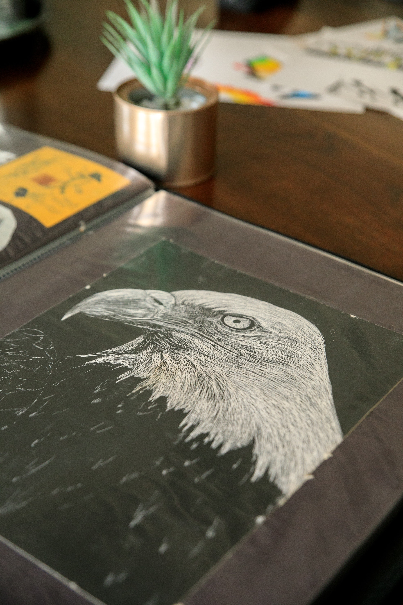

I have always admired photography. Portraits have always caught my attention. There is something so beautiful about seeing a human in art and having the abillity to give that stranger a story based on our interpratation of the piece of art presented.
I love that the artist used a majority of the space using negative space. this makes the viewer's attention gravitate directly to the bird's head. Using negative space is a great way to bring the eye to the focal point.

This photo showcases the personality of the artist's sketchbook. I love seeing the contrast of art on the two pages. One has characters in a simple design and the other shows the artist's ability to create a very detailed piece.